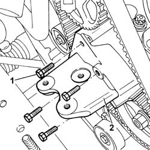
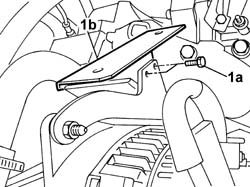
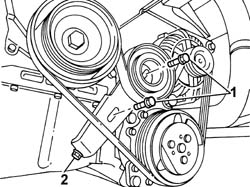
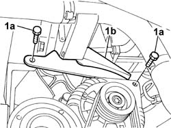
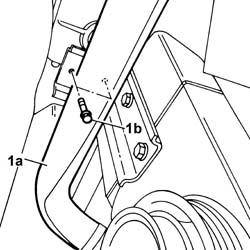
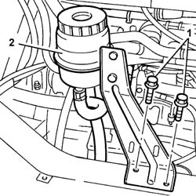
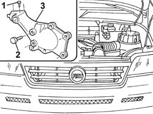
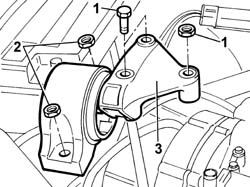
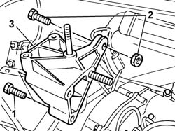

1008A46 CAM SHAFT LEFT RIGID MOUNT - R R
- Path
- Procedures > 10 ENGINE UNIT > 1008 POWER UNIT SUPPORTS > 1008A POWER UNIT FASTENINGS > 1008A46 CAM SHAFT LEFT RIGID MOUNT - R R
- Kind
- repair procedure (removal / refitting; the operation number is the code)
- Applies to
- engines: 2.0 16V, 2.0 JTD 8V, 2.3 JTD 16V; all production periods
- Interactive page
- https://sloeber94.github.io/elrnDB-fDct/en/#/244000630
Applies to: engines: 2.0 JTD 8V; all production periods
 Removing
Removing
 Refitting
Refitting- Position the vehicle on the lift.
- Raise the vehicle.
Op. 7055B54 UNDER-ENGINE GUARD - R R
Op. 4450B04 RIGHT FRONT WHEEL R R
Op. 1092G10 SINGLE ENGINE BELT R R
See in Op. 1092A10
See in Op. 1032D12
- Lower the vehicle.
1. Undo the bolts securing the rigid mount to the cylinder block/crankcase.
2. Remove the gearbox side rigid engine mount.

Applies to: engines: 2.0 JTD 8V; all production periods
Refitting
Removing- Fit gearbox side rigid engine mount.
- Tighten the bolts securing the rigid engine mount to the cylinder block/crankcase to torque.
 | Value - daNm | Fastening | Component | Ø |
|---|---|---|---|---|
. | - | Bolt | RIGID ENGINE MOUNT, TIMING SIDE | - |
- Raise the vehicle.
See in Op. 1032D12
See in Op. 1092A10
Op. 1092G10 SINGLE ENGINE BELT R R
Applies to: engines: 2.0 16V; all production periods
Removing
RefittingOp. 5530A50 ALTERNATOR GUARD - R & R.
1. Undo the fixing bolts (1a) and remove the alternator guard mounting bracket (1b).

Applies to: engines: 2.0 16V; all production periods
Op. 4450B04 RIGHT FRONT WHEEL R R
Op. 7055B54 UNDER-ENGINE GUARD - R R
1. Loosen the alternator belt tensioner retaining bolts.
2. Tighten the adjustment screw and loosen the belt.

Applies to: engines: 2.0 16V; all production periods
1. Undo the fixing bolts (1a) and remove the alternator mounting bracket (1b).

Applies to: engines: 2.0 16V; all production periods
1. Move the engine coolant hose (1a) aside and undo the bolts fixing the bracket to the rigid power unit support (1b).

Applies to: engines: 2.0 16V; all production periods
- Lower the vehicle and position a hydraulic arm support beneath the gearbox to support the engine.
1. Undo the bolts securing the power steering fluid reservoir bracket.
2. Move the power assisted steering fluid reservoir complete with bracket aside.

Applies to: engines: 2.0 16V; all production periods
1. Undo the bolts fixing the timing side flexible mounting to the rigid support.
2. Undo the bolts fixing the rigid support to the power unit.
- Gently lower the engine until the studs on the rigid support comes out of the housing in the flexible mounting.
3. Remove the timing side rigid power unit support.

Applies to: engines: 2.0 16V; all production periods
Refitting
Removing- Place the rigid power unit support in position.
- Tighten the bolts fixing the rigid support to the power unit and to the flexible mounting and check the torque.
| Value - daNm | Fastening | Component | Ø |
|---|---|---|---|---|
. | 5 | Bolt | RIGID ENGINE MOUNT, TIMING SIDE | - |
- Remove the hydraulic lift.
- Fit the power assisted steering fluid reservoir complete with bracket and tighten the fixing bolts.
- Tighten the bolts fixing the rigid support to the power unit.
- Fit the alternator mounting bracket in position and tighten the fixing bolts.
- Tighten the alternator belt tensioner fixing bolt to the recommended torque.
- Tension the alternator belt.
Op. 7055B54 UNDER-ENGINE GUARD - R R
Op. 4450B04 RIGHT FRONT WHEEL R R
- Position the alternator guard mounting bracket and tighten the fixing bolts.
Applies to: engines: 2.3 JTD 16V; all production periods
Removing
RefittingOp. 7055B54 UNDER-ENGINE GUARD - R R
Op. 4450B04 RIGHT FRONT WHEEL R R
Op. 1092B72 POWER STEERING PUMP DRIVE BELT - ALTERNATOR - R&R
- Lower the vehicle.
- Position a hydraulic arm beneath the engine oil sump to support the power unit.
1. Undo the bolts and the nut securing the flexible mount to the rigid power unit mount on the engine.
2. Undo the nuts securing the engine block to the bodyshell.
3. Remove the flexible block from the engine compartment.

Applies to: engines: 2.3 JTD 16V; all production periods
1. Undo the bolts securing the rigid mount to the cylinder block/crankcase.
2. Undo the bolt securing the rigid engine mount to the cylinder block/crankcase.
3. Remove the gearbox side rigid engine mount.

Applies to: engines: 2.3 JTD 16V; all production periods
Refitting
Removing- Fit gearbox side rigid engine mount.
- Tighten the bolt securing the rigid engine mount to the cylinder block/crankcase to torque.
| Value - daNm | Fastening | Component | Ø |
|---|---|---|---|---|
. | 5 | Bolt | RIGID ENGINE MOUNT, TIMING SIDE | M10X1.5 |
- Tighten the bolts securing the rigid engine mount to the cylinder block/crankcase to torque.
| Value - daNm | Fastening | Component | Ø |
|---|---|---|---|---|
. | 5 | Bolt | RIGID ENGINE MOUNT, TIMING SIDE | M10X1.5 |
- Fit the flexible block in its seat in the engine bay.
- Tighten the nuts securing the engine block to the body to torque.
| Value - daNm | Fastening | Component | Ø |
|---|---|---|---|---|
. | (body block) 5 | Nuts | FRONT FLEXIBLE MOUNTING BLOCKS, POWER UNIT | M10 |
- Tighten the nut and both bolts securing the flexible block to the rigid power unit mount, timing side.
| Value - daNm | Fastening | Component | Ø |
|---|---|---|---|---|
. | (Rigid mount on engine) 5 | Bolt | FRONT FLEXIBLE MOUNTING BLOCKS, POWER UNIT | M10 |
| Value - daNm | Fastening | Component | Ø |
|---|---|---|---|---|
. | (Rigid mount on engine) 8 | Nut | FRONT FLEXIBLE MOUNTING BLOCKS, POWER UNIT | M12 |
- Lower the vehicle.
Op. 1092B72 POWER STEERING PUMP DRIVE BELT - ALTERNATOR - R&R